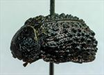
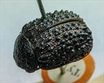
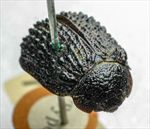
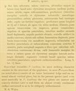

Click on images to enlarge
{kind=link}

Fig. 1. Paropsis armata type specimen, lateral view
{kind=link}

Fig. 2. Paropsis armata type specimen, dorsal view
{kind=link}

Fig. 3. Paropsis armata type specimen, anterior view
{kind=link}

Fig. 4. Paropsis armata, description
Name
Paropsis armata Blackburn, 1896
Diagnosis and Notes
Blackburn (1896) deals with P. armata as part of his 'subgroup i' (i.e., those species with "strongly marked characters"). Within that group, he characterises it as:
AAA. Prosternum normal, but other characters exceptional, as follows:-;
BBB. The exceptional characters lie in the elytral epipleurae;
C. Epipleurae subhorizontal.
Type specimen
Location: BMNH
Label data: /“Type” (red-bordered circle)/ “6155 N.S.W.”/ “Blackburn coll. 1910-236.”/ “Paropsis armata Blackb.”/.
Female; Size: 11.12 (L) x 8.1 (W) x 4.9 (H) mm; A-A: 1.77 mm, HCE/BL: ~17% (estimate from photo of lateral view).
Very distinct, large Trachymela – heavily studded with large verrucae on elytra, pronotum with rugged surface, large punctures even on disc.
Original description
Translation of original description (Figure 4) by ChatGPT, 04/2026:
♀. Rather broadly somewhat oval; less convex, the greatest height (seen from the side) not situated before the middle of the elytral margin; less shining. Above reddish-orange, with the prothorax (except the sides), the scutellum, and the tubercles and spots of the elytra somewhat pitchy; beneath pitchy, the base of the antennae and the tarsi reddish. Head rather strongly rugulose. Pronotum about 2⅓ times as broad as long, from the apex scarcely dilated beyond the middle, scarcely transversely impressed behind the apex, coarsely vermiculate-rugulose and sparsely punctulate; sides moderately rounded, not flattened; posterior angles obtuse. Scutellum almost smooth, convex in the middle. Elytra depressed beneath the humeral callus, behind the base scarcely distinctly transversely impressed, somewhat strongly punctulate in a somewhat serial arrangement, and armed with 9 series of conical tubercles; the narrow marginal part separated from the disc by a continuous but somewhat obsolete groove; the inner margin of the humeral callus much more distant from the suture than from the lateral margin of the elytra. Basal ventral segment more sparsely and less finely punctured. Epipleura somewhat horizontal. Length 5 lines [~10.6 mm], width 3⅘ lines [~8.1 mm].
References
Blackburn, T. 1896, "Revision of the genus Paropsis. Part I", Proceedings of the Linnean Society of New South Wales, vol. 21, no. 4, 637-693 (page 648).
Copyright © 2026. All rights reserved.